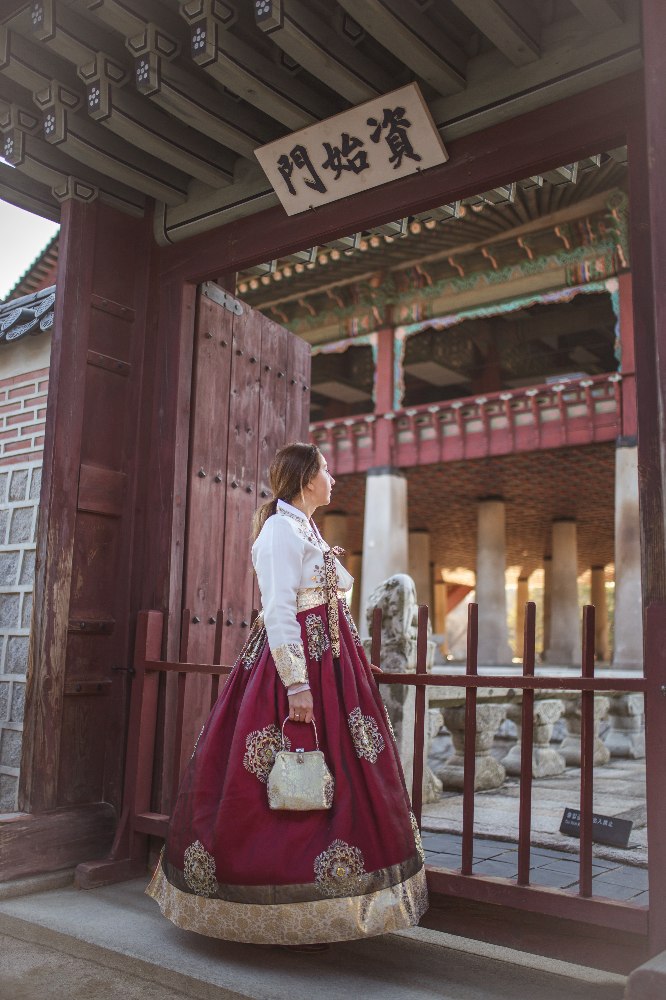
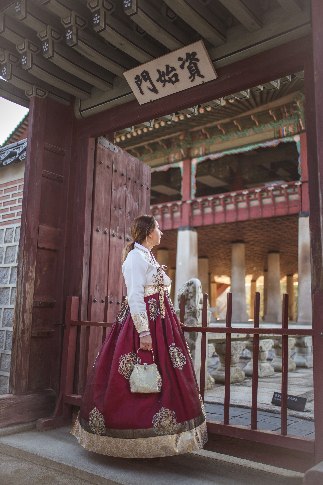
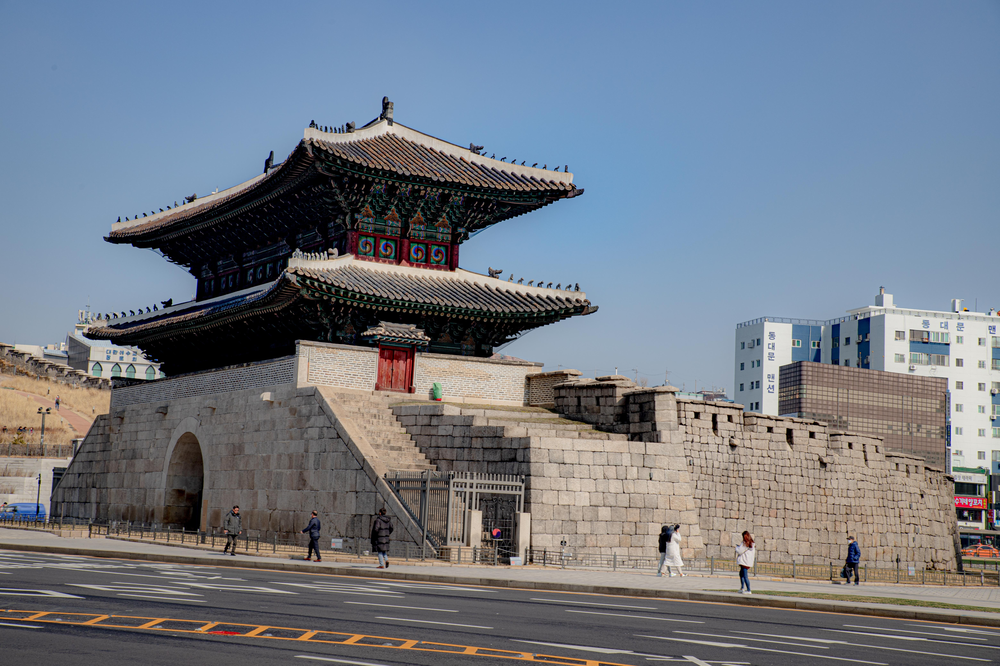
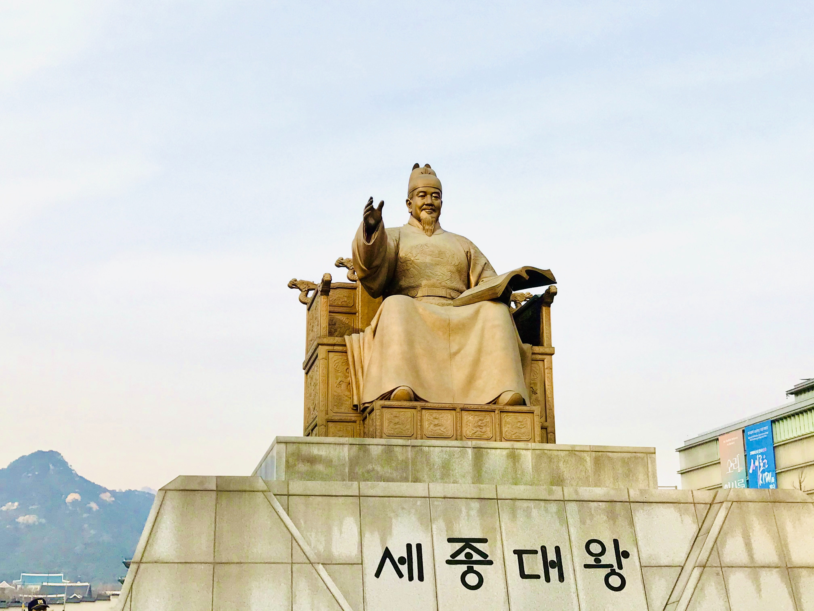
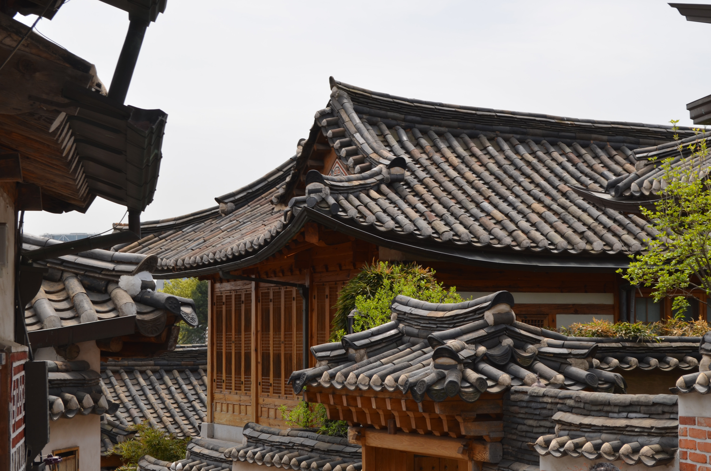
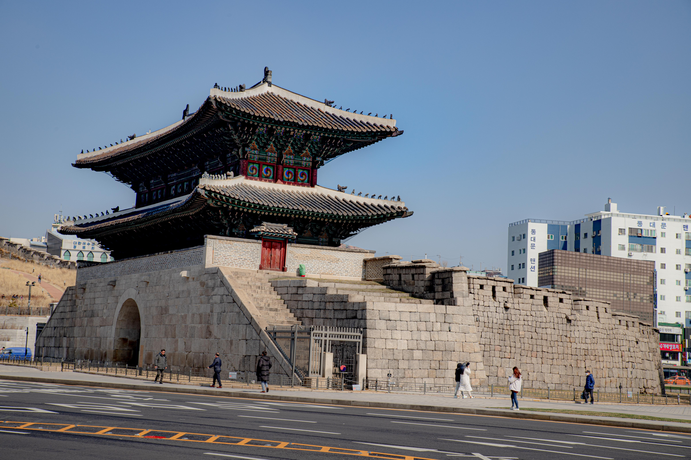
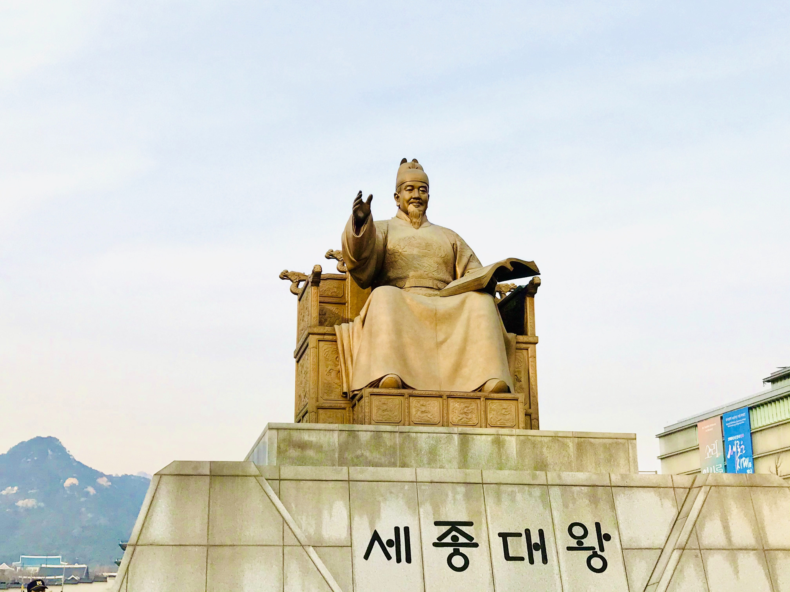
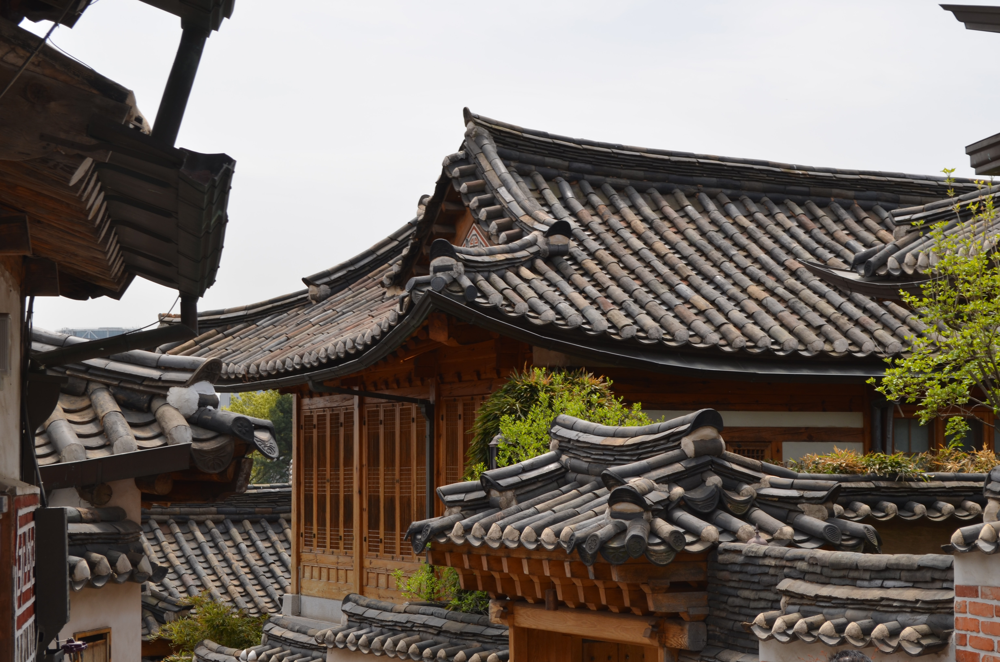
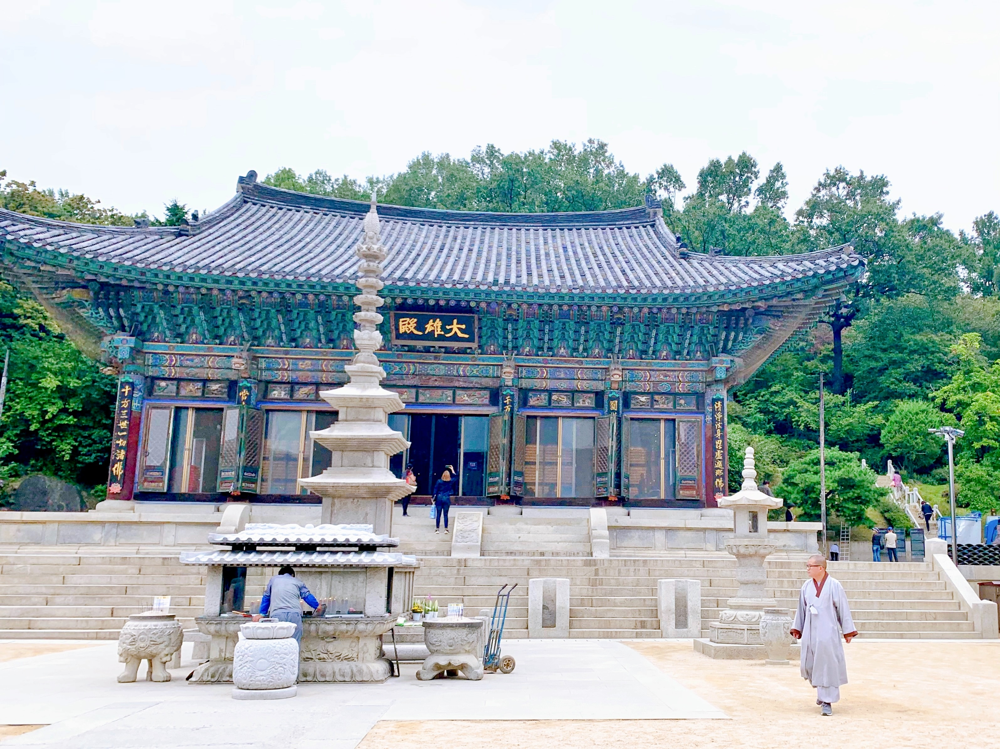
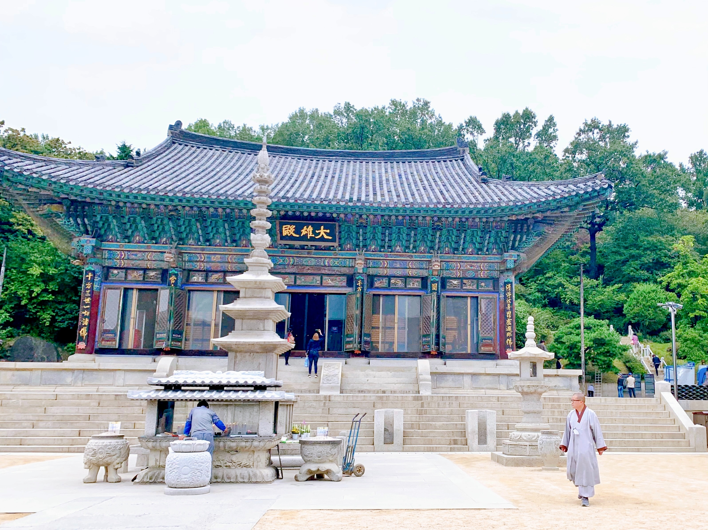

Jongno-gu
Szöul jelképe a palota negyed, ahol kiemelkedik a főpalota, Gyeongbokgung (경복궁), ahova ingyenes a belépés, ha az illető felöltözik tradicionális koreai ruhába, hanbokba (한복). A második legszebb palota az Changdeokgung (창덕궁), ahol a titkos kertbe hamar elfogynak a jegyek. A környéken van még egy nagyon szép kapu, a Heunginjimun. A fő palota előtt van a Gwanghwamun tér, ahol Sejong királyról van egy szobor, aki föltalálta a koreai nyelvet. Jogyesa elvarázsol minket a beton közül és egy buddhista paradicsomba visz minket. A kikölcsönzött hanbokjainkal fölsétálhatunk a Bukchon Hanok faluba, ahol tradicionális házak között fotózhatunk. Leülhetünk a Cheonggyecheon mellé, ahol relaxálva hallgathatjuk a víz csörgését. Végül elmehetünk Insa-dongba, ahol tradicionális teaházakat találhatunk szűk, de hangulatos utcák között.
 

 







 
